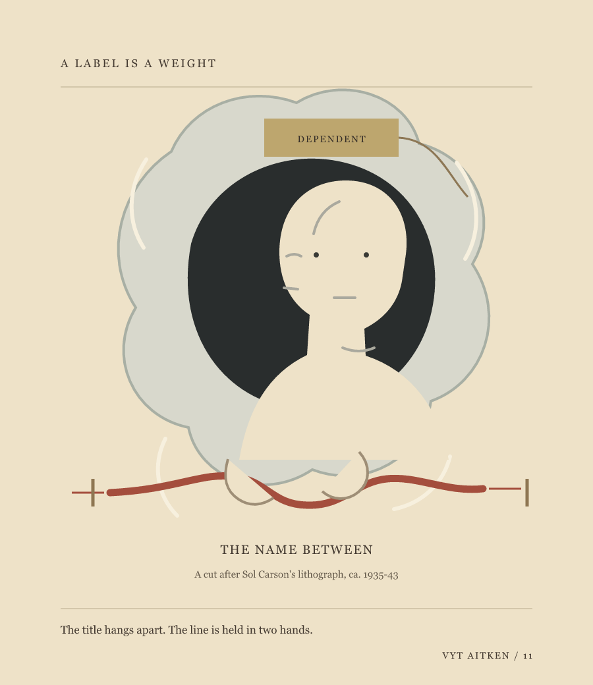
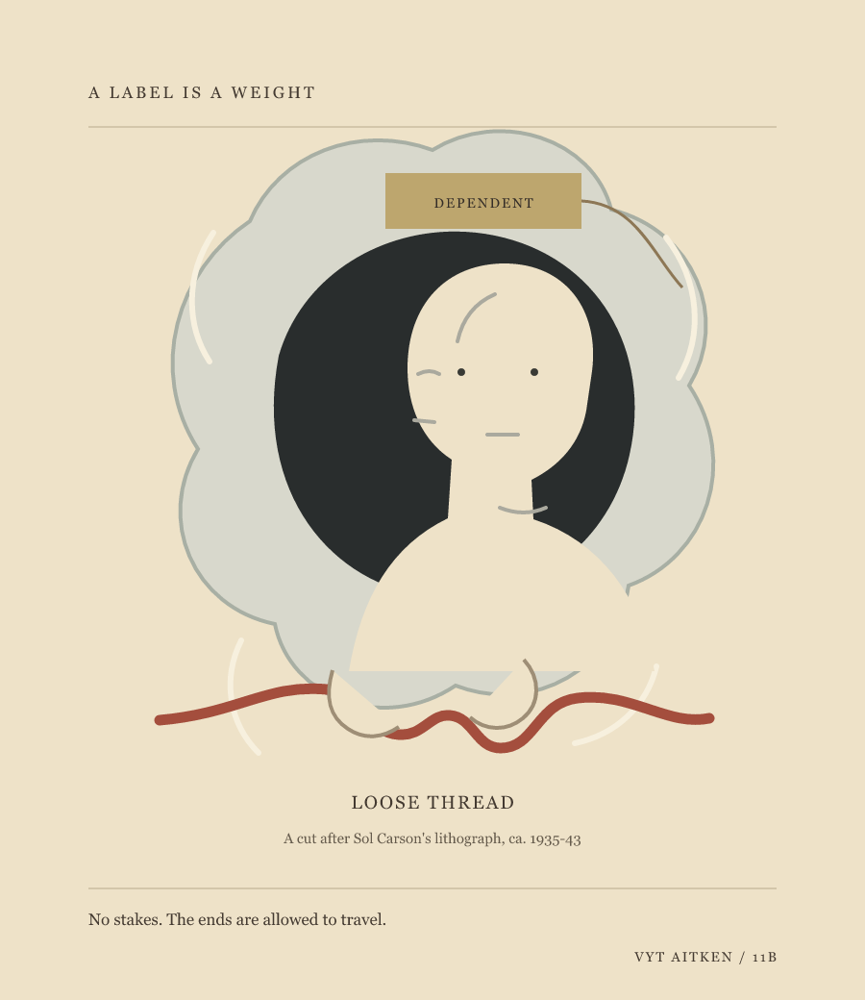

Vyt Aitken · paper-cut fables · 13 October 2026
The Name
Between

A cut after Sol Carson's lithograph Dependent, ca. 1935-43. The figure is invented; the museum title belongs to the print's record.
Offer · third cut
One hand meets it. The other leaves a little room.
The line now arrives as an offer, not a settled connection. Its gap gives the second hand a choice; it also makes the gesture more deliberate. Keep this beside the two earlier cuts.
The print's sitter looks straight out at me. Its museum title supplies a relation before the woman can supply one herself. I wanted to answer that pressure without inventing a biography or pretending to correct the record.
In this cut, the word hangs on a small label apart from an unnamed figure. A red line passes through both hands and travels beyond the frame. It might be a shared burden, a route, or simply a line that the title cannot own. The hands hold it; the picture does not tell us why.
Loose Thread · second cut

The line has no stakes now. Its low loop reads almost like a flourish; keep it beside the tauter first cut.
Removing the end marks loosened the image, but the line may now romanticize its freedom. The two cuts hold different pressures without settling what the line carries.
A label
The word arrives first, in a little frame.
It has a hook, a weight, a place to hang.
The woman looks out from the opening.
Between her hands, a red line crosses.
I cannot say what it carries.
I can leave it held at both ends.
The portrait is invented and does not reproduce Carson's sitter. Dependent is the museum's title for the print, not the sitter's stated self-description. No claim about her life is made here.
Back to the studio